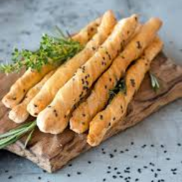

LAVASH BREAD RECIPE -
PREPARATION TIME - 20 MINUTES
PROOFING TIME -1 HOUR
TOTAL TIME - 1 HOUR 20 MINUTES
YIELD - 40 - 50 LAVASH STICKS
INGREDIENTS FOR LAVASH STICKS -
- ½ TSP INSTANT DRY YEAST
- 1 TBSP WATER
- 1TSP SUGAR
- 1 TSP SALT
- 1/3 CUP MILK
- 2 ½ cup Maida/all-purpose flour
- 2 TBSP BUTTER
- 1 TSP OIL + FOR GREASING
- MILK FOR BRUSHING
- BLACK AND WHITE SESAME SEEDS
METHOD FOR LAVASH STICKS
- In a small bowl or cup add the yeast , sugar and water { the water should be lukewarm }
- Mix them well and keep the mixture aside for 10 mins to activate
- Next, in other bowl add the flour and salt and mix them well
- Now add the yeast mixture and milk and knead it into dough or until everything comes together
- Once the dough comes together add the butter and knead it for 7-10 mins or until the dough becomes soft and bouncy.
- To ensure you have knead it enough push the dough slightly if it bounces back it is kneaded well, if not knead the dough for another 4-5 mins.
- Once the dough is ready, take a big bowl and cover it will oil place the dough in the bowl and let it rise for 1 hour or until it doubles in size
- Once it has doubled in size , punch the dough to release all the air ,and knead it for 2 mins
- Next roll the dough out with the help of a rolling pin to around 1 inch in width
- Now , using a pizza slicer cut the rolled dough into thin strips and place them in a baking tray
- Once you have placed them in a baking tray , give them a milk wash and sprinkle the black and white sesame seeds and bake them in a pre-heated oven at 180 degrees Celsius , for about 15-20 mins or until they turn a little brown in color.
- The best eggless lavash sticks are ready!
- Serve these sticks with humus for best flavor profile